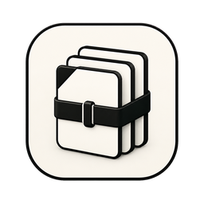

Bring the project together
Group applications, documents, folders, URLs, and terminal commands in one workspace.

WorkBundleWorkspace / macOS
Pick up where your work left off.
A project is more than a folder. WorkBundle keeps the tools, resources, and context of your work together, so returning to a project does not mean rebuilding your desktop from memory.
Available on request
01 / Why it exists
Switching projects often means finding the same documents, opening the same apps, and remembering the same commands. WorkBundle gives that context a home. Open a workspace, find its resources, and continue with your notes and activity close at hand.
Group applications, documents, folders, URLs, and terminal commands in one workspace.
Save descriptions, notes, screenshots, and activity alongside the resources they explain.
Reopen resources, review owned commands, and export or back up a workspace when you need to move it.
02 / A closer look
See the interface in detail.
Open any image to explore it.

A sample release review brings applications, project files, a checklist, reference material, a saved command, and next steps into one native workspace.

The workspace gallery keeps two configuration captures together, with names, dates, and local storage details.
03 / In practice
Add the apps, folders, files, and links for one project.
Open what you need and run saved commands explicitly.
Use notes, screenshots, and history to recover your train of thought.
Workspace metadata, notes, screenshots, and managed copies of files are stored locally in Application Support.
Opening a URL, application, or terminal command can contact external services. Those actions use the resources you selected.
A workspace export can contain private files, paths, notes, and command output. Review its contents before sharing.
05 / Get started
This independent application is available on request. Tell me what you want to use it for and which device and OS version you have.
Request access ↗A question about the app?
Setup, everyday use, and a direct way to get help.
Help & support ↗Contact the developer ↗